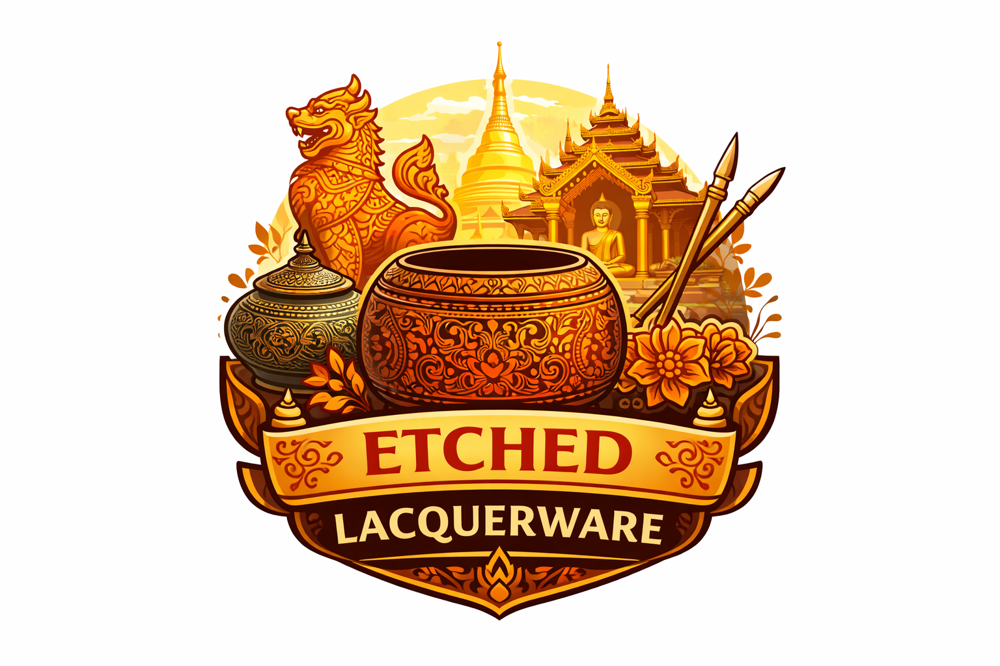
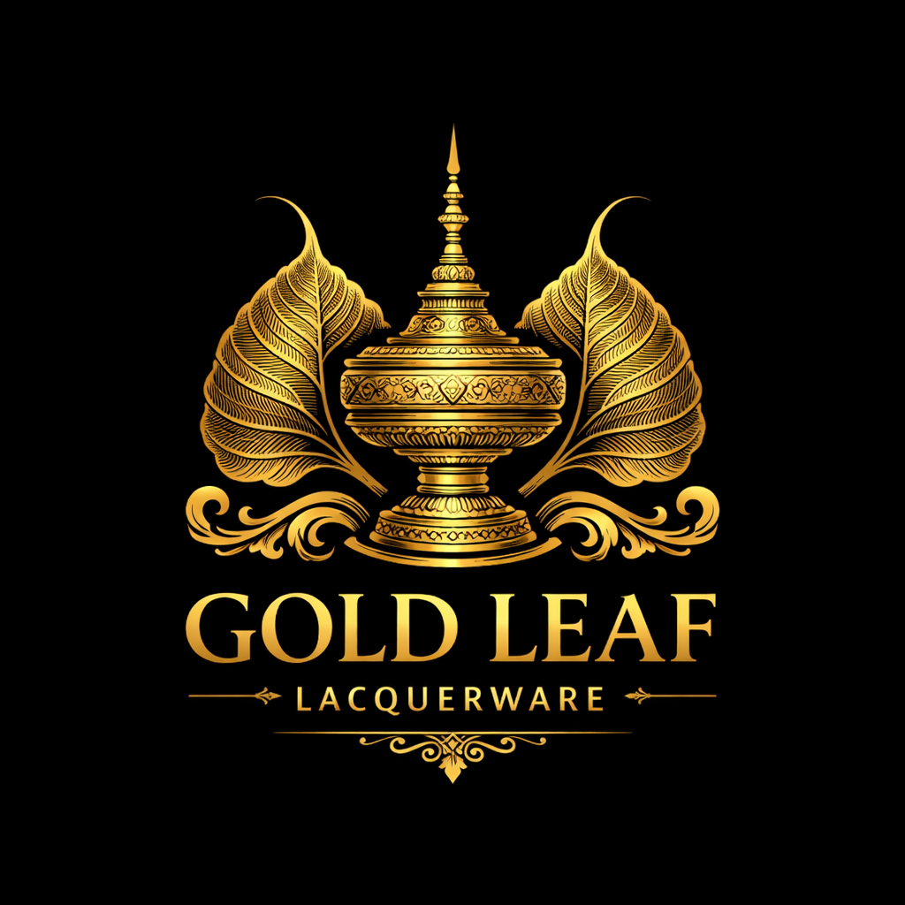
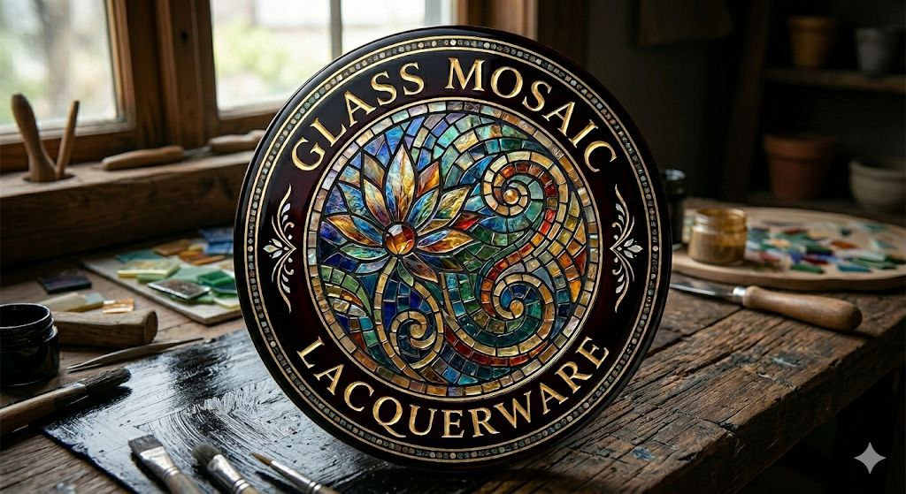
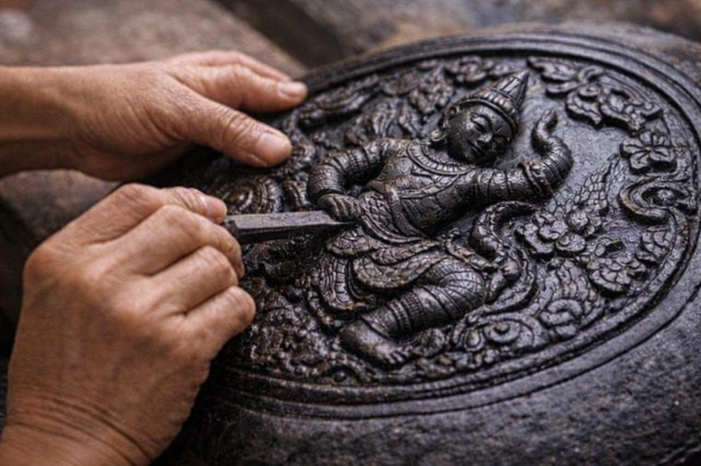
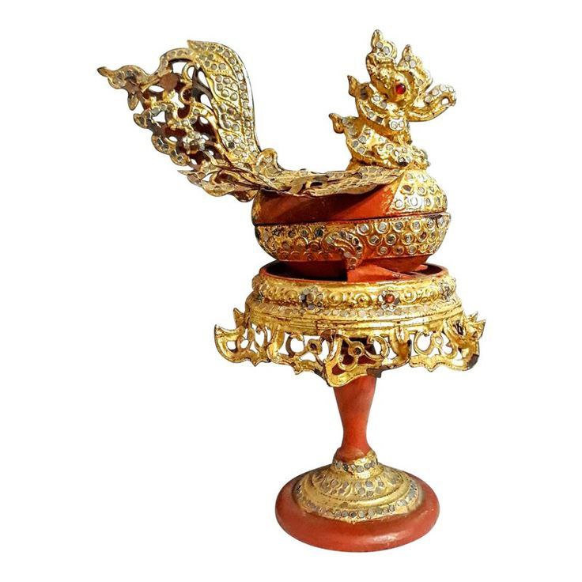

Plain Lacquerware

This style features a simple lacquer coating without decorative patterns. Black lacquerware is called “A-nat Htae” and red lacquerware is known as “A-ni Htae.” It is commonly used foreveryday utensils.

This technique involves delicately carving intricate patterns onto the lacquer surface using a fine stylus, then filling the designs with colored pigments. Famous “Yun” lacquerware belongs to this category.

Designs are first painted onto a black lacquered surface, then covered with gold leaf. Due to the use of real gold, these pieces are highly valuable and luxurious.

Small pieces of glass are arranged into decorative patterns on the lacquer surface and enhanced with gold. This type is commonly found in religious objects and royal items.
This style features a simple lacquer coating without decorative patterns. Black lacquerware is called “A-nat Htae” and red lacquerware is known as “A-ni Htae.” It is commonly used foreveryday utensils.

This technique uses a mixture of lacquer and ash or sawdust to create raised designs on the surface, forming three-dimensional decorative patterns.

Similar to glass mosaic, but more luxurious, this type is decorated with gemstones such as rubies and other precious stones. It was traditionally used by royalty.